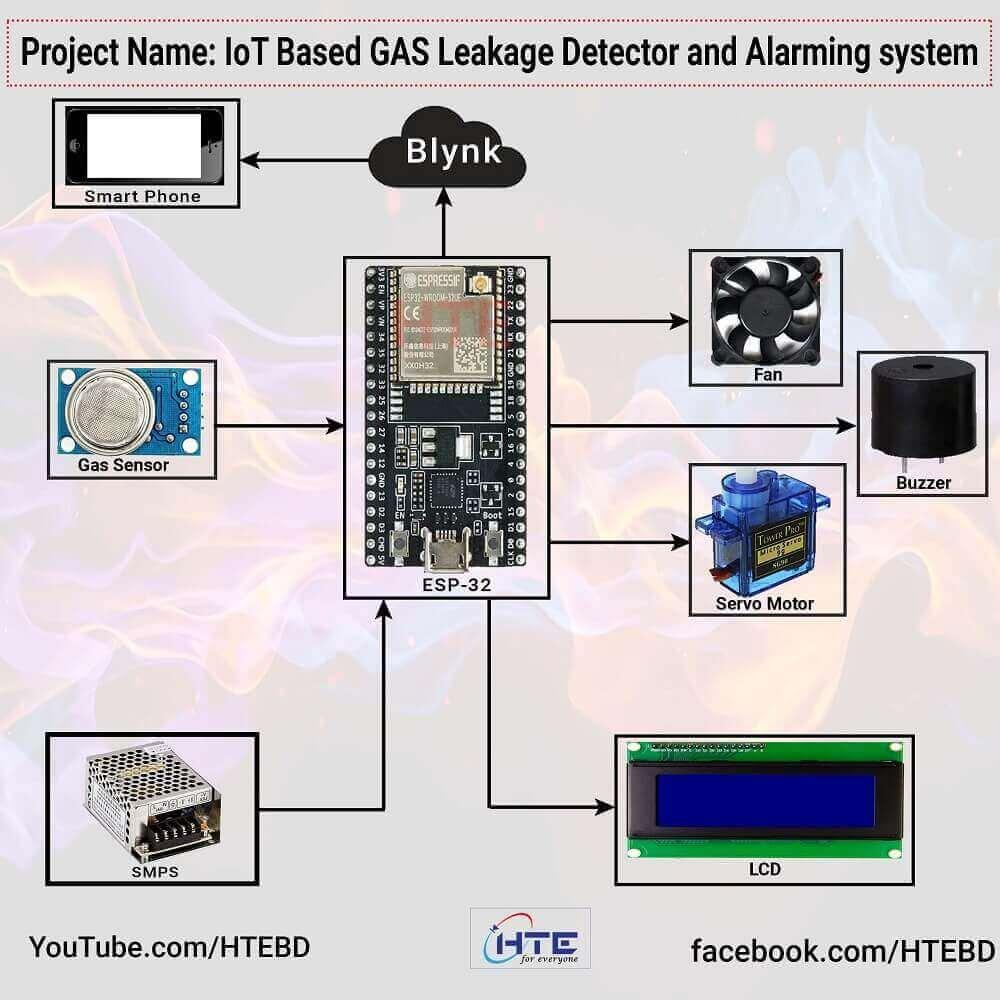
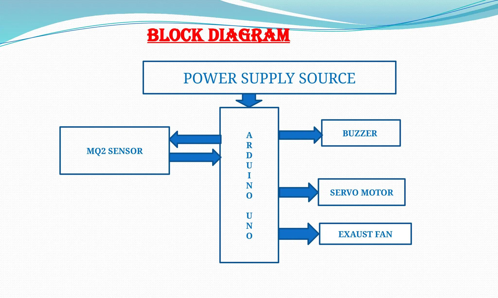
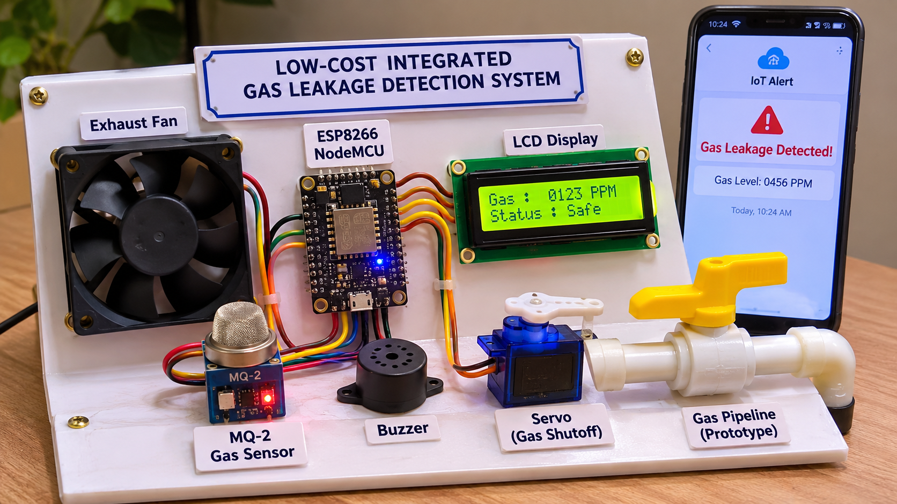

PROJECT 03
Low-Cost Integrated Gas Leakage Detection System
An IoT-based gas leakage detection and prevention system developed using ESP8266 NodeMCU. It detects gas leakage and sends alerts through cloud-based communication without using a GSM module.
Project Gallery



Project Overview
The Low-Cost Integrated Gas Leakage Detection System is designed to identify gas leakage and improve safety in residential and industrial environments. The system uses an ESP8266 NodeMCU microcontroller for processing and internet connectivity. When gas leakage is detected, the system communicates alerts through a cloud-based notification mechanism. The project aims to provide an affordable and effective solution for gas leakage monitoring.
Project Objective
The main objective is to develop a low-cost gas leakage detection system that can identify gas leakage conditions and notify users promptly. It aims to reduce the risk associated with gas leakage by combining sensor-based detection, microcontroller processing and internet-based communication.
Working Principle
01. Gas Detection
The gas sensor monitors the surrounding environment and detects the presence of gas.
02. Data Processing
The ESP8266 NodeMCU receives the sensor information and processes the detected gas condition.
03. Leakage Identification
The system identifies a possible gas leakage condition based on the sensor readings and configured detection level.
04. Cloud Alert
When gas leakage is detected, the system uses internet connectivity to send an alert through cloud-based SMS notification.
Key Features
- Low-cost gas leakage detection solution
- ESP8266 NodeMCU-based system
- Continuous gas monitoring
- Internet-based communication
- Cloud-based SMS alert notification
- No separate GSM module required
- Designed to improve safety and awareness